| |
Глобальная карта мира
3.1.
Таблица участков карты
Мы снова рады приветствовать Вас, дорогой коллега!
На нашем третьем с Вами занятии мы рассмотрим вопрос глобальной
карты мира. Безусловно мы не станет
ее делать столь масштабной, как в игре Travian,
потому что у нас в учебных целях в нашем мире живет пока совсем
немного персонажей и чтоб обеспечить их тесное соседство, создадим
карту - 15x15. То есть у нас будет 15x15=225
зон для организации поселков наших персонажей из таблицы
users.
В прошлом уроке Вы научились регистрировать новых игроков в нашей
с Вами игре, а так как наш проект игры учебный и базу часто
приходится пересоздавать с нуля, то есть предложения - сразу, в
скрипте создать в таблице users парочку
персонажей, чтоб каждый раз не проходить утомительную процедуру
регистрации после изменения структуры базы.
Теперь вспомните фрагмент 2.1.1 из прошлого урока и сейчас мы
добавим в него пару строк (теперь это будет фрагмент 3.1.1):
/*Таблица персонажей*/
CREATE TABLE `users` (
usr_id bigint(20) unsigned NOT NULL auto_increment, /*ID игрока*/
nick CHAR(32) UNIQUE, /*ник игрока (уникальный, при регистрации)*/
pass CHAR(32), /*пароль игрока (задается при регистрации)*/
uniq_id varchar(50) NOT NULL default '', /*уникальный идентификатор сессии*/
stat int(1) not null default 0, /*подтверждена регистрация 0/1*/
email CHAR(64), /*почтовый ящик игрока*/
full_name CHAR(50), /*реальное имя игрока*/
regdate timestamp, /*дата регистрации*/
user_gender SMALLINT(1), /*пол игрока и перса*/
gold FLOAT DEFAULT 0, /*золотых монет*/
PRIMARY KEY (`usr_id`)
) ENGINE=MyISAM DEFAULT CHARSET=cp1251;
ALTER TABLE users auto_increment = 100;
insert into users (nick,pass,email,stat ) values ('test','1234','test_travgame@mail.ru',1);
insert into users (nick,pass,email,stat ) values ('Суперигрок','1234','super_travgame@mail.ru',1);
Фрагмент 3.1.1О чем же нам повествуют новые три строчки: В 16 строке
фрагмента 3.1.1 мы устанавливаем число начала отсчета для поля usr_id
(в таблице только одно поле может быть автоинкрементным и у нас в
users это поле usr_id ). Таким образом все
регистрирующиеся персонажи начнут свой отсчет со 100. Здесь мы
просто зарезервировали первый 99 номеров для usr_id, может они нам
понадобятся для каких-то неигровых персонажей (NPC),
так, на всякий случай!
Далее, в строках 18 и 19 фрагмента 3.1.1 мы добавляем двух игроков с
никами test и Суперигрок
в таблицу users. Таким образом, при выполнении скрипта
travgame.sql у нас в игре сразу будут два
игрока, благодаря которым мы будем тестировать создаваемые на наших
занятиях все новые и новые возможности нашей с Вами стратегической
игры. После выполнения этого скрипта, Вы увидите, что таблица users
уже имеет две записи.
Итак, у нас есть игроки, нам нет необходимости пока что регистрировать
новых через форму в файле regank.php и мы
сейчас займемся более полезным делом - создадим таблицу участков
карты, на двух из которых поселятся наши игроки
test и Суперигрок.
Вот как выглядит эта таблица, которую мы назовем fields (по
англ. - поля)
/*Таблица незанятых полей общей карты и также деревни игрока, если есть usr_id*/
CREATE TABLE `fields` (
fid bigint(20) unsigned NOT NULL auto_increment, /*ID поля*/
xcoord int,
ycoord int,
fid_type int, /*тип поля: 1,2,3,4*/
usr_id int default 0, /*связан с игроком?*/
-- сколько ресурсов?
f_grain int default 700, /* нач. кол-во зерна */
f_ore int default 700, /* нач. кол-во руды */
f_wood int default 700, /* нач. кол-во дерева */
f_clay int default 700, /* нач. кол-во глины */
PRIMARY KEY (`fid`)
) ENGINE=MyISAM DEFAULT CHARSET=cp1251;
Фрагмент 3.1.2Вы смело можете добавить создание этой таблицы в наш
скрипт travgame.sql и выполнить его (мы
предполагаем, что Вы работаете в dbForge Studio
for MySQL как более удобном средстве разработки баз данных
mySQL чем PHPMyAdmin).
Давайте разберемся, для чего предназначены поля в нашей с Вами
таблице fields.
fid - будет хранить уникальный
идентификационный номер участка глобальной карты и автоматом будет
увеличиваться на единицу для каждого нового участка (вы помните, что
мы планируем 255 участков).
xcoord, ycoord - это координаты участка в нашем мире.
fid_type - тип участка. В начальной стадии разработки игры мы
будем использовать его для рисования отличающихся картинок участков
карты. Потому запланируем для него номера с 1 до 4 (будет четыре разных
картинки, например такие:
 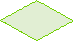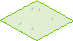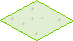) 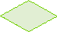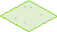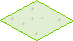)
usr_id - это поле содержит либо 0 (значит поле ничейное),
либо хранит идентификатор из таблицы users
и это значит что здесь размещен поселок игрока с
идентификатором usr_id.
f_grain , f_ore , f_wood , f_clay
- это начальные ресурсы (зерно, руда, дерево, глина), которые
закрепляются за этим участком (и по умолчанию они равны по
700 для каждого ресурса).
Для начала - достаточно. Со временем, возможно, мы немного расширим
таблицу fields.
3.2.
Процедура генерации полей карты
Сейчас, перед нами возник вопрос инициализации всех полей в
создаваемой нами игре. Конечно мы может 255 раз написать
SQL-запрос INSERT,
но это не интересно и поступило предложение сделать хранимую
процедуру на языке mySQL, чтоб генерация
участков в таблице fields выглядела
более компактно. Так как мы
планируем
не более 4 типов картинок для незанятых под поселки
участков, то, следовательно процедура должна случайным образом
формировать значение в поле fid_type таблицы
fields. Но если Вы, вдруг,
захотите увеличить количество картинок до 5 или 10, то лучше это
предусмотреть сразу и, поэтому, мы будет передавать в процедуру
генерации полей два аргумента:
1 - начальный номер генерируемого поля
2 - конечный номер генерируемого поля
Итак, встречайте нашу процедуру, которая называется
makefields :
-- процедура по генерированию случаных типов незанятых полей (участков) --
create procedure makefields (param1 int, param2 int)
BEGIN
declare x int default 1;
declare y int default 1;
declare st int default 0;
WHILE y <= 15 DO
WHILE x <= 15 DO
SET st = RAND()*10 / (10 + 1) * ((param2 - param1) + param1)+0.5;
insert into fields (xcoord,ycoord,fid_type) values (x,y,st);
SET x = x+1;
END WHILE;
SET x = 1;
SET y = y+1;
END WHILE;
END;
Фрагмент 3.2.1Кратко опишем код во фрагменте 3.2.1. В строке
1 мы объявляем создание процедуры с именем makefields
и указываем, что ей нужно передавать два аргумента (param1 и param2,
оба имеющие тип - целое число (int)).
В строках с 4-6 мы объявляем три переменные x,y
и st, которые будем использовать далее. В строках 7-8 мы
открываем два цикла по координатам x и
y (это обе наши ранее объявленные
переменные). Так как каждый из этих циклов
повторяется с 1 до 15, то, все что идет далее до
строки 12 - повторится 15х15=225 раз.
А это, не что иное как строки с 9 по 11. В
9 строке мы генерируем случайное число в диапазоне от param1
до param2. Это стандартная формула
создания диапазона случайных чисел. И если мы передадим
в процедуру makefields аргументы 1 и 4,
то в строке 9 в переменную st
сгенерируется число от одного до четырех и никак не иначе.
Далее, в строке 10 Вы видите оператор SQL
INSERT , который вставляет значения переменных x,y
и сгенерированного значения
переменной st
в подготовленную нами ранее
таблицу fields.
Попробуйте добавить фрагмент 3.2.1 к нашему файлу
travgame.sql и выполнить его. Конечно же
эта процедура не создаст Вам ничего и поэтому нужно ее вызвать:
-- пройдемся по всем полям --------
CALL makefields(1,4);
Фрагмент 3.2.2
Вставьте этот фрагмент чуть ниже тела процедуры из предыдущего
фрагмента 3.2.1
Выполните скрипт travgame.sql.
Если возникнет ошибка базы данных mysql
связанная со стеком, сделайте следующее. Зайдите в
C:\WebServers\usr\local\mysql-5.1 и
откройте текстовым редактором (например блокнотом)
файл my.cnf и найдите в нем
такую строку
thread_stack = <какое-то
значение (обычно 128 К)>
исправьте на
thread_stack = 256K
Сохраните измененный файл my.cnf.
Перегрузите пакет Denwer и снова
попытайтесь выполнить sql-скрипт,
содержащийся в travgame.sql.
В результате мы получим заполненную значениями таблицу fields.
Откройте ее в dbForge Studio
for MySQL.
Вы должны увидеть что-то типа:

Рисунок
3.2.1
Безусловно, значения в поле
fid_type будут у Вас другими,
так как формируются случайным образом.
Теперь давайте зарезервируем два из 255 созданных поля под
поселки для наших персонажей test и
Суперигрок:
-- резервируем поле для нашего тестового персонажа
update fields set usr_id = 100 where fid = 49;
update fields set usr_id = 101 where fid = 52;
Фрагмент 3.2.3
Поля с идентификаторами 49 и 52 мы выбрали просто так, но чтоб
эти поля были неподалеку друг от друга.
Выставьте и этот фрагмент в
travgame.sql и выполните. Теперь у нас
есть все условия для визуализации игровой карты.
3.3.
Изометрическая визуализация полей
Если Вы играли
в travian, то наверняка помните как
интересно в нем отображается карта полей -
имитирует изометрическое расположение. Мы
с Вами сейчас попробуем сделать что-то подобное. Все участки карты у
нас уже сформированы процедурой makefields, но перед попыткой
показать на страничке браузера нашу карту, давайте сделаем
авторизацию игрока в создаваемой нами игре. Цель поставим следующую
- игрок набирает в браузере url игры -
http://travgame -
попадает на страничку авторизации, вводит логин и пароль
(например test и 1234) входит в игру и
сразу видит перед собой карту участков. Не сложно? Тогда - вперед!
Нашу стартовую страницу игры назовем стандартно -
index.php. Весь функционал ее будет
составлять форма с двумя полями ввода и кнопкой входа в игру. Ну
ладно, сделаем еще какую-нибудь картинку, чтоб выглядело это чуть
веселее и сделаем пару надписей с названием нашей игры!
Форма для ввода логина и пароля проста:
<form id="loginForm" name="loginForm" action="auth.php" method="post">
<div id="formz">
<table cellpadding="0" cellspacing="0" id="logindata" width="392">
<tr>
<td width="148"><label>Имя игрока<br></label>
<input id="login" name="name" type="text" class="login" /></td>
<td width="152"><label>Пароль<br></label>
<input id="pwd" name="password" type="password" class="pass" /></td>
<td width="145">
<input type="submit" class="button" value="Вход" name="loginMode">
</td>
</tr>
</table>
</div>
</form>
Фрагмент 1.3.1
Мы не будем нагружать описания уроков всеми строками из некоторых
простых страниц, а будем приводить только основные их части. Имейте
это в виду! Страницу
index.php целиком Вы можете найти и
изучить ее содержимое здесь.
Выглядит наша страница авторизации следующим образом:
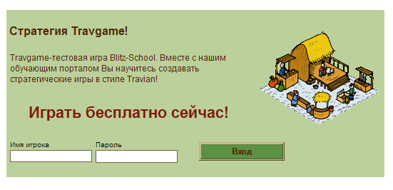В
приведенном выше фрагменте нас интересует только имя формы (loginForm и ее action ,
который передает данные в auth.php), имена полей для ввода
логина (name) и пароля (password), а также имя кнопки Вход (loginMode).
Вы уже знаете из Занятия 2 как действует форма отправки данных на
сервер. Наверно вы догадались, что передаются эти данные в скрипт
авторизации - auth.php. и сейчас мы создадим этот скрипт,
ведь авторизация игрока в игре - дело немалой важности!
Встречайте скрипт авторизации:
<?php
session_start();
@include("config.inc.php");
//Необходимо подключиться к БД
$link = mysql_connect($DBSERVER, $DBUSER, $DBPASS)
or die("Не могу подключиться" );
// сделать $DB текущей базой данных
mysql_select_db($DB, $link) or die ('Не могу выбрать БД');
// данные отправлены
if( ($_POST['name'] !='') && ($_POST['password'] !='') ) {
//Создаем запрос к базе для проверки существования Пользователя
$name = mysql_escape_string( $_POST['name'] );
$pass = mysql_escape_string( $_POST['password'] );
$result = mysql_query("SELECT * FROM users WHERE stat=1 and nick='".$name."' and pass='".$pass."'");
//Проверка результата запроса
if(mysql_affected_rows()!=0) {
$row = mysql_fetch_array( $result );
$usr_id = $row["usr_id"];
// запомним uid сессии
$uniq_id = md5($_SERVER['REMOTE_ADDR'].$_SERVER['HTTP_USER_AGENT'].mktime());
mysql_query("update users set uniq_id = '$uniq_id' WHERE nick='".$name."' and pass='".$pass."'");
$_SESSION['name'] = $name;
$_SESSION['usr_id'] = $usr_id;
$_SESSION['uid'] = $uniq_id;
header("Location: game.php");
} else { echo "Ошибка авторизации!"; }
} else { echo 'Вы не заполнили логин и/или пароль <br/><a href="index.php"/>назад</a>'; }
?>
Фрагмент 3.3.1Кратко опишем работу скрипта. Вначале считываем
данные для коннекта к базе из файла config.inc.php и соединяемся с
базой. Это мы уже делали во втором занятии. В 13 строке
проверяем наличие данных логина и пароля (отправлены ли они из
формы, не пустые ли эти значения?). Далее стандартной функцией mysql_escape_string
мы очищаем строки от ненужных данных - это простейшая защита от
sql-инъекций (а вдруг кто-то захочет
взломать нашу игру? :) ) В строке 19 мы выполняем
sql-запрос для нахождения игрока в таблице
users с данными логином и паролем и конечно же проверяем его
статус (stat=1 - прошел ли он
подтверждение регистрации?) Если строка, удовлетворяющая этому
условия нашлась, создадим переменную $uniq_id (смотрите строку 25
скрипта) , мы такое уже тоже делали на прошлом занятии. Значение
этой переменной запишем в поле uniq_id таблицы
users и в сессионную переменную $_SESSION['usr_id']
. Потом на всех страницах мы будем
сравнивать эти значения, что оградит нас от несанкционированного
запуска этих страниц без авторизации. Кроме того, сохраним и логин
игрока в переменной сессии $_SESSION['name'], это нам тоже
приходится!
В строке 30 мы передаем управление в файл game.php. Для
начала это будет наша главная страница игры. Что? у нас еще нет
этого файла? Так давайте сделаем его!
Как уже указывалось, на всех страницах мы будем сравнивать значение $_SESSION['usr_id']
с полем uniq_id из таблицы users , если
они не совпадают, значит выдавать сообщение, чтоб игрок вначале
авторизовался.
Вот как мы это сделаем в нашем файле game.php.
$name = $_SESSION['name'];
// проверим уникальный id сессии сохраненный в таблице
$result = mysql_query("SELECT u.uniq_id, f.xcoord, f.ycoord FROM users u join fields f on u.usr_id=f.usr_id WHERE nick='$name'")
or die("Query failed : " . mysql_error());
//Проверка результата запроса
if(mysql_affected_rows()!=0) {
$row = mysql_fetch_array( $result );
$sess_id = $row["uniq_id"];
if( $_SESSION['uid'] !== $sess_id ) die ( "Ошибка авторизации!" );
} else { die( "Авторизируйтесь в игре!" ) ; }
Фрагмент 3.3.2Вот нам и пригодилась переменная сессии $_SESSION['name'].
Мы узнаем логин игрока и передаем его в SQL-запрос
(строка 4 фрагмента 3.3.2). Вернет ли это запрос нам данные или нет
(это проверяется в строке 7). Если нет - предлагаем игроку
авторизоваться в игре! Если да, то далее мы считываем значение из поля uniq_id и еще чуть ниже сравниваем его с $_SESSION['uid'].
Если эти значения не совпадают, выдаем сообщение "Ошибка
авторизации!".
Вы наверно заметили, что в запросе (строка 4 фрагмента 3.3.2)
мы пытаемся узнать координаты поселка игрока. Этих координат в
таблице users, но они есть в таблице
fields, которая связана с таблицей
users по полю usr_id (присутствующему в
обоих таблицах). Ключевое слово join объединяет эти две таблицы и мы
можем получить координаты из таблицы fields,
несмотря на то что поиск (WHERE nick='$name') осуществляем по
таблице users.
Как Вы думаете , зачем нам эти координаты поселка игрока? Правильно,
чтоб отцентрировать карту по координатам этого поселка! Давайте
поставим условия, что отображать карту будем фрагментарно - не более
чем 7х7=49 видимых участков (Вы помните, что всего у нас 15х15=255
участков). Остальные будем показывать скроллингом карты вправо-влево
и вверх-вниз.
Что ж, считаем координаты и произведем необходимые вычисления:
$max_fields = 15;
$x = $row["xcoord"];
$y = $row["ycoord"];
// Отцентрируем карту
if($x<4) $x=4;
if($x>($max_fields-3) ) $x = $max_fields-3;
if($y<4) $y=4;
if($y>($max_fields-3) ) $y = $max_fields-3;
// --
Фрагмент 3.3.2Здесь мы делаем проверки расположения поселка. Если
поселок находится близко к какой-то границе карты, конечно мы не
сможем его отцентрировать, поэтому нам придется выбирать в качестве
центра другую ячейку, в других случаях - центром карты будет наш
поселок.
Визуализацию поселка сделаем через JavaScript
процедуру, потому что скроллинг карты будем делать без
перезагрузки всей страницы game.php. Так ведь будет красивее,
не правда ли? Технология Ajax
поможет нам в этом.
Наступило время создать файл, где мы будем хранить все необходимые
JavaScript функции. Назовем его
main.js и добавим в него несколько
функций. Для начала это будет функция инициализация
Ajax-объекта.
function ajaxobj()
{
var objXMLHttp = null;
if (window.XMLHttpRequest)
{
objXMLHttp = new XMLHttpRequest();
}
else if (window.ActiveXObject)
{
objXMLHttp = new ActiveXObject("Microsoft.XMLHTTP");
}
return objXMLHttp;
}
Фрагмент 3.3.3
Эта функция, как уже упоминалось поможет нам вызывать
содержимое из другого файла, не перегружая текущий, открытый в
браузере игрока:
А в начале, в файле game.php добавим такие строки :
<html>
<head>
<link href="start.css" rel="stylesheet" type="text/css">
<script src="main.js" type="text/javascript"></script>
<div id="fld_div" style="position:absolute;left:0px;top:0px; z-index:12;z-index:12"></div>
</head>
<body onload="draw_field( <?php echo $x.','.$y; ?> );">
</body>
</html>
Фрагмент 3.3.4
Как видите в строке 4 фрагмента 3.3.4 мы подключаем файл main.js.
В дальнейшем мы добавим в него еще немало
JavaScript функций. А пока что создадим функцию
draw_field (которая, как Вы видите из
строки 10 принимает в качестве аргументов наши рассчитанные
координаты центрирования карты)
Вот как выглядит JavaScript функция
draw_field:
function draw_field( x, y ){
var r = parseInt(Math.random()*1000000000000000);
m = ajaxobj();
m.open('GET', 'fld.php?x='+x+'&y='+y+'&r='+r,false);
m.send(null);
if((m.readyState == 4) && (m.status == 200)) {
fld_div.innerHTML = m.responseText;
cur_x = x; cur_y = y;
}
}
Фрагмент 3.3.5
В ней создается экземпляр Ajax-объекта,
который использует метод open для
выполнения скрипта fld.php. Если все хорошо (свойства объекта
readyState равно 4 и status == 200 ), значит в responseText
содержится ответ (какие-то данные) от файла fld.php, который
мы поместим в слой fld_div, определенный еще в во фрагменте 3.3.4
(строка 6). Сразу поясним, fld.php что будет нам возвращать
html-код рисования наших полей карты и
сейчас пришло время создать этот файл:
<?php
session_start();
@include("config.inc.php");
//Необходимо подключиться к БД
$link = mysql_connect($DBSERVER, $DBUSER, $DBPASS)
or die("Не могу подключиться" );
// сделать $DB текущей базой данных
mysql_select_db($DB, $link) or die ('Не могу выбрать БД');
if( ( $_GET['x'] != '' ) && ( $_GET['y'] != '' ) ){
$middle_x = $_GET['x'];
$middle_y = $_GET['y'];
$left_x = $middle_x - 3;
$top_y = $middle_y - 3;
$res = mysql_query("SELECT fid, nick, xcoord, ycoord, fid_type, f.usr_id FROM fields f
left join users u on u.usr_id = f.usr_id
WHERE xcoord>=$left_x
and xcoord<$left_x+7
and ycoord>=$top_y
and ycoord<$top_y+7",$link ) ;
$x_coord = 0;
$y_coord = 0;
$x_coord_start = 315;
$y_coord_start = 288;
$x = 1;
$y = 1;
$x_coord = $x_coord_start;
$y_coord = $y_coord_start;
while ($row = mysql_fetch_array( $res )) {
$usr_id = $row["usr_id"];
$fid = $row["fid"];
$nick = $row["nick"];
$fid_type = $row["fid_type"];
$xcoord = $row["xcoord"];
$ycoord = $row["ycoord"];
$x1 = 0; $y1 = 20;
$x2 = 36; $y2 = 0;
$x3 = 73; $y3 = 20;
$x4 = 36; $y4 = 41;
if ( $usr_id !=0 ){
if ( $usr_id == $_SESSION['usr_id'] ){
//
echo "<MAP Name='FPMap1$fid'>";
echo "<AREA Shape='Polygon' coords = '$x1,$y1,$x2,$y2,$x3,$y3,$x4,$y4' onmouseover=\"say_owner('".$nick."')\"></MAP>";
echo '<div style="position:absolute;left:'.$x_coord.'px;top:'.$y_coord.'px;width:73px; height:41px; z-index:12;z-index:12">
<IMG SRC="img/fld200.png" border="0" USEMAP="#FPMap1'.$fid.'" ISMAP"></div>';
} else {
echo "<MAP Name='FPMap1$fid'>";
echo "<AREA Shape='Polygon' coords = '$x1,$y1,$x2,$y2,$x3,$y3,$x4,$y4' onmouseover=\"say_owner('".$nick."')\"></MAP>";
echo '<div style="position:absolute;left:'.$x_coord.'px;top:'.$y_coord.'px;width:73px; height:41px; z-index:12;z-index:12">
<IMG SRC="img/fld100.png" border="0" USEMAP="#FPMap1'.$fid.'" ISMAP"></div>';
}
} else {
echo "<MAP Name='FPMap1$fid'>";
echo "<AREA Shape='Polygon' coords = '$x1,$y1,$x2,$y2,$x3,$y3,$x4,$y4' onmouseover=\"say_owner('".$nick."')\"></MAP>";
echo '<div style="position:absolute;left:'.$x_coord.'px;top:'.$y_coord.'px;width:73px; height:41px; z-index:12;z-index:12">
<IMG SRC="img/fld'.$fid_type.'.png" border="0" USEMAP="#FPMap1'.$fid.'" ISMAP"></div>';
}
$x_coord += 40;
$y_coord -= 22;
if ($x++ >= 7 ){
$x = 1;
$y++;
$y_coord_start += 22;
$y_coord = $y_coord_start;
$x_coord_start += 40;
$x_coord =
$x_coord_start;
}
}
$x_coord = 299;
$y_coord = 278;
// Отрисуем номера полей
for($i=1; $i<=7; $i++){
// номера по горизонтали
echo '<div style="position:absolute;left:'.$x_coord.'px;top:'.$y_coord.'px;width:73px; height:41px; z-index:12;z-index:12">'.$left_x++.'</div>';
$x_coord += 40;
$y_coord -= 22;
}
$x_coord = 295;
$y_coord = 319;
for($i=1; $i<=7; $i++){
// номера по вертикали
echo '<div style="position:absolute;left:'.$x_coord.'px;top:'.$y_coord.'px;width:73px; height:41px; z-index:12;z-index:12">'.$top_y++.'</div>';
$x_coord += 40;
$y_coord += 22;
}
} else echo 'error!';
// КНОПКИ
echo '<div style="position:absolute;left:390px;top:180px;width:73px; height:41px; z-index:12;z-index:12">
<IMG SRC="img/ar_up.png" onclick="map_go_pos(0,-1)"></div>';
echo '<div style="position:absolute;left:735px;top:385px;width:73px; height:41px; z-index:12;z-index:12">
<IMG SRC="img/ar_dn.png" onclick="map_go_pos(0,1)"></div>';
echo '<div style="position:absolute;left:740px;top:180px;width:73px; height:41px; z-index:12;z-index:12">
<IMG SRC="img/ar_right.png" onclick="map_go_pos(1,0)"></div>';
echo '<div style="position:absolute;left:385px;top:385px;width:73px; height:41px; z-index:12;z-index:12">
<IMG SRC="img/ar_left.png" onclick="map_go_pos(-1,0)"></div>';
?>
Фрагмент 3.3.6Поначалу выглядит громоздко и немного устрашающе?
На самом деле ничего сложного. Пройдемся по строкам этого фрагмента:
Начнем со строки 12. В ней проверяются координаты центра поселка,
которые мы передаем в этот скрипт из JavaScript
процедуры
draw_field. Это Вы помните! Конечно же,
если координаты не переданы - выдаем сообщение об ошибке (строка
104). В строках 13 и 14 сохраним координаты центра в переменных ($middle_x
и $middle_y) чисто для удобства. Так как мы отображаем окно с
полями размером 7 х 7, то для нахождения верхней левой координаты
отображаемого фрагмента карты отнимем 3.
Схематично представим фрагмент карты с участком под поселок игрока
(помечен цифрой 1) и участком с координатами левого верхнего угла
(помечен цифрой 2 на рисунке 3.3.1)
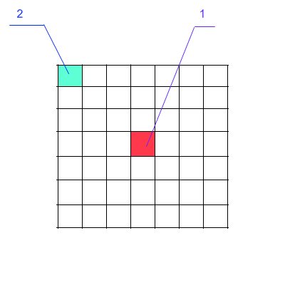
Рисунок 3.3.1
Как Вы видите в идеальном варианте, участок под поле игрока
находится в центре видимого фрагмента карты и отстоит от всех границ
на три поля (вот откуда мы взяли цифру 3). И следовательно
координаты левого верхнего угла мы узнаем в строках 16 и 17
фрагмента 3.3.6. Теперь осталось написать sql-запрос
и вытащить все 7х7=49 участков из таблицы
fields для их визуализации на странице в браузере. Этот
запрос Вы можете лицезреть в строках 19-34. Т.е. выборка идет по
координатам с $left_x по $left_x+7 и
$top_y по $top_y+7 - проще простого! Этот запрос вернет 49
строк и нам нужно будет только нарисовать картинки полей в нужных
координатах. Для этого инициализируем пару переменных (строки
26-36). А в строке 38 начнем цикл по всем 49 строкам, которые
нам вернул наш sql-запрос. В 39-44 строки
фрагмента 3.3.6 мы сохраняем в переменных значения полей ника игрока
($nick), занимающего участок (если
участок не пустой ) , тип участка ($fid_type),
координаты участка и т.д.
Далее (строки 46-49), переменные $x1,$y1,$x2,$y2,$x3,$y3,$x4,$y4
- это не что иное, как относительные координаты вершин
каждого участка на карте.
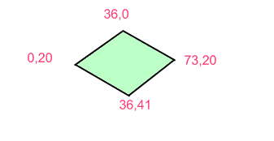
Рисунок 3.3.2
На рисунке первая координата - х, вторая - у.
В строках с 51-70 мы занимаемся тем, что создаем так
называемые активные области. В языке HTML
они задаются ключевыми словами MAP (карта)
и AREA (зона)
. Зоны могут быть разной формы (circle,
rect, polygon). У нас это будут
полигональные формы. Каждая из таких AREA
описывается восьмью координатами (для всех зон это будут координаты,
задаваемые переменными $x1,$y1,$x2,$y2,$x3,$y3,$x4,$y4)
- то есть одни и те же координаты. Картинки участков полей
будут у нас размещаться в слоях, имеющих абсолютные координаты на
веб-странице. Вы заметили, что имя объекта MAP
формируется динамически (<MAP Name='FPMap1$fid'>),
т.е. скрипт подставит вместо $fid
соответствующее ему значение. Ну а $fid
для каждой записи - это идентификатор из таблицы
fields.
Координаты слоев отображающих картинки с полями сдвигаются на
значения $x_coord += 40; $y_coord -= 22; (Смотрите строки 70-71
фрагмента 3.3.6) именно это смещение и создает иллюзию
изометрического размещения участков. В строках 72-80 проверяются
вывод участков: т.е после вывода семи участков нужно менять
координату по высоте т.е. $y_coord.
В строках с 83-103 мы выводим номера этих участков (с 1-15 ,
ну конечно у нас помещается только 7, так что с 1-7 или 2-8 и т.д.))
чтоб пользователю было удобно понимать, в каких координатах
находится тот или иной участок карты.
И последнее, нам нужно сделать кнопки управления скроллингом
(смещением карты). Это сделано в строках 108-115 фрагмента 3.3.6. По
сути это 4 слоя, расположенные в определенных удобных координатах на
странице, которые содержат в себе следующие картинки:
(вправо,
влево, вниз, вверх)
Вот как выглядит наша карта целиком:
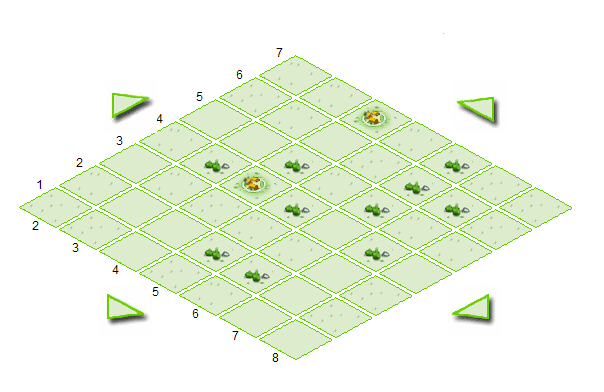
Рисунок 3.3.3.
3.4.
Реализация скроллинга карты
Так как карта у нас больше чем 7х7 участков, то все остальные
участки находятся вне зоны видимости и сейчас мы должны научиться
также отображать их на карте. Как Вы помните из предыдущего пункта,
кнопки управления скроллингом карты находятся у нас в строках
108-115 фрагмента 3.3.6. Так кнопка вверх
это
картинка на языке HTML описываемая как- <IMG SRC="img/ar_up.png" onclick="map_go_pos(0,-1)">
и это значит что к картинке прикручено событие щелчка мыши ( onclick
- значит "при щелчке левой кнопкой мыши"). Это событие приводит к
срабатыванию JavaScript функции
map_go_pos.
Эта функция срабатывает при щелчке на всех четырех картинках
навигации карты, вот только аргументы, передаваемые в нее - разные.
1. Для кнопки вверх: map_go_pos(0,-1)
2. Для кнопки вниз: map_go_pos(0,1)
3. Для кнопки влево: map_go_pos(-1,0)
4. Для кнопки вправо : map_go_pos(1,0)
По сути, это значит, что мы просто будем прибавлять или отнимать
координату х или у от рассчитанных ранее координат центра
отображения карты.
Вот как выглядит JavaScript функция
map_go_pos:
function map_go_pos(dx,dy){
if( ((cur_x-3+dx)>0) && ((cur_x+3+dx)<=15) ) cur_x += dx;
if( ((cur_y-3+dy)>0) && ((cur_y+3+dy)<=15) ) cur_y += dy;
draw_field( cur_x, cur_y );
}
Фрагмент 3.4.1Аргументы dx,dy
- это наши приращения к координатам, cur_x и cur_y
определяются в функции draw_field
(вспомните фрагмент
Фрагмент 3.3.5)
В строках 2 и 3 фрагмента 2.4.1 осуществляется проверка, а можно ли
двигать карту. Т.е. должно выполняться условие, что текущая
координата cur_y минус 3 должна быть не меньше
нуля и эта же координата плюс 3 и плюс приращение по
Y не должна быть больше 15 (максимальная
ячейка поля). Тоже характерно и для переменной cur_x . Таки
образом при скроллинге карты мы не должны вылазить за пределы
участков 1 и 15. А что же находится в строке 3 фрагментв 3.4.1
- конечно же вызов уже знакомой нам функции draw_field
с уже новыми координатами.
Что же мы увидим при нажатии на кнопку вниз
на
веб-странице с нашей картой:
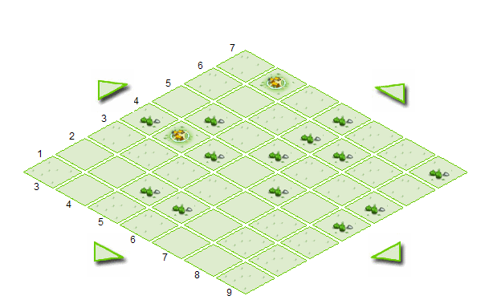
Рисунок 3.4.1
Правильно - карта сдвинулась по координате Y (сравните
рисунки 3.4.1 и
3.3.3).
Теперь Вы можете сдвигать карту в любом направлении и
просмотреть все ее 255 участков!
3.5.
Информация о жителях
И последнее в текущем третьем занятии - давайте
выводить логин игрока при наведении курсора мыши на участок, занятый
поселком какого-нибудь игрока. Если Вы вспомните, к примеру строчку
из фрагмента 3.3.2
echo "<AREA Shape='Polygon' coords = '$x1,$y1,$x2,$y2,$x3,$y3,$x4,$y4' onmouseover=\"say_owner('".$nick."')\"></MAP>";
Фрагмент 3.5.1то, наверняка,
заметили событие onmouseover (событие, возникающее при
наведении курсора мыши на элемент - в данном случае это
элемент <AREA>)
Это событие вызывает JavaScript
функцию say_owner, в которую передается
ник игрока, полученный из таблицы users.
Функция say_owner очень
проста,
вот она:
function say_owner( s ){
player.innerHTML = s;
}
Фрагмент 3.4.1Из листинга этой функции
мы видим, что ник игрока передается в
какой-то слой с именем
player (метод innerHTML обычно
характерен для манипулирования содержимым
слоев в языке JavaScript)
Этот слой мы опишем в файле game.php.
Вспомните фрагмент 3.3.4 и добавьте в него строки чтоб
он принял такой вид:
<html>
<head>
<link href="start.css" rel="stylesheet" type="text/css">
<script src="main.js" type="text/javascript"></script>
<div id="fld_div" style="position:absolute;left:0px;top:0px; z-index:12;z-index:12"></div>
<div id="info_div" style="position:absolute;left:700px;top:100px; z-index:12;z-index:12">
<table class="info">
<tr><td colspan="2" class="cellinfo">Данные</td></tr>
<tr><td class="cellinfo">Игрок:</td><td class="cellinfo"><div id="player"></div><td></tr>
<tr><td class="cellinfo">Население:</td><td class="cellinfo"><div id="qty"></div></td></tr>
</table>
</div>
</head>
<body onload="draw_field( <?php echo $x.','.$y; ?> );">
</body>
</html>
Фрагмент 3.3.4На самом деле мы создали слой info_div, внутри него
определили таблицу и только в одной из ее ячеек создали нужный нам
слой :
(<div id="player"></div>)
Теперь при наведении курсора мыши на любой поселок можно
увидеть логин игрока, который в нем живет:
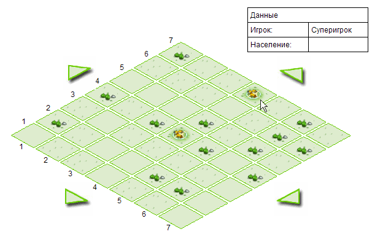
Все файлы, которые были созданы в нашем с Вами третьем занятии Вы
можете найти здесь.
В следующем уроке мы с Вами займемся
ресурсными полями и научимся создавать фермы, шахты руды, лесопилки
и кончено же - основную еду обитателей нашего поселка - зерно.
|
 |


 Перечень курсов
Перечень курсов
 Регистрация
Регистрация